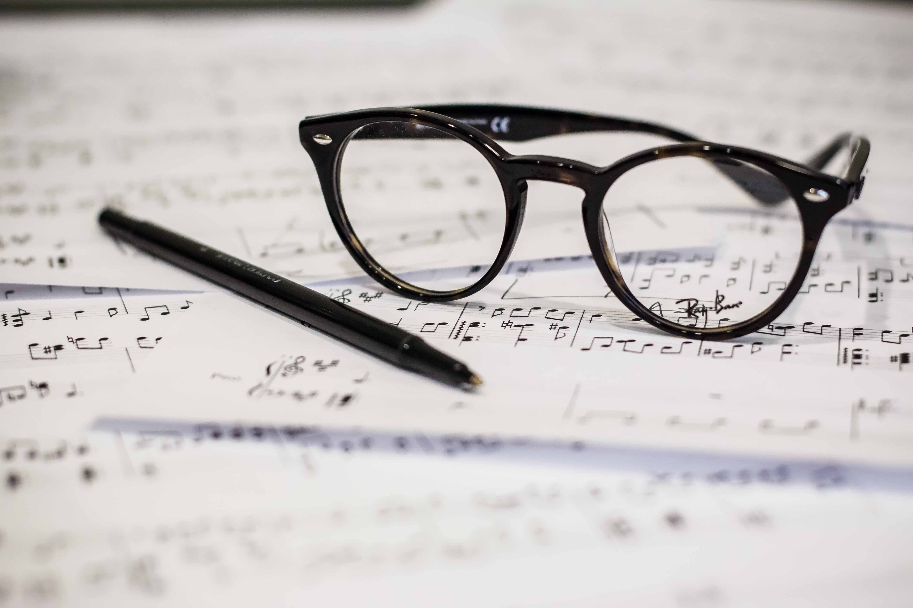

"En dag på vore musiklinje der mødes vi altid herinde i vores
musiklokale og så har en af eleverne en sang med som vi lytter til og så
prøver lidt at fordybe os lidt i noget musik [...]"
Simon Troelsgaard, musiklærer.
Valgfag
Strenge
Har du altid haft lyst til at få fingrene i, og spille et
strenginstrument? På musiklinjen har vi undervisning i guitar, bas og
ukulele.

Musikproduktion
Er du til de fedeste trap og hip-hop beats eller det seneste inden for
EDM (electronic dance music)? Så deltag i vores
musikproduktionsvalgfag, her lærer du at få fingrene dybt i en digital
audio workstation.
Bandspil
Vil du gerne opleve det sociale samvær ved at spille i et band? Så
deltag i vores band-valgfag og vær med til at spille de fedeste 80'er
hits!
Informationer
Musik på Klank Efterskole (6 timer/uge)
Kunne du tænke dig at gå på en rigtig musikefterskole? Musiklinjen på
Klank Efterskole er for dig, der har lyst til at synge og spille i et
forpligtende fælleskab med andre.
Om du er begynder eller rutineret betyder ikke noget, blot du har lyst,
engagement og vilje til at give dig i kast med musikkens udfordringer og
oplevelser.
Vi vil have base i skolens nye studie og øvelokaler, udstyret med
professionelt baggear og instrumenter til sammenspil, og Pro tools og
Mac computer++ til studiearbejde.
Musiklinien har seks ugentlige undervisningstimer, men flere egne prøver
og øvere må påregnes op til koncerter, shows, musicalforestillinger og
evt. indspilninger.
Musiklinjen arbejder med:
Orkestersammenspil, hvor I bliver udfordret på niveau.
Spille i faste orkestre med eget valgt materiale – også egne numre
Musical/teaterorkester ved den årlige musical
Fast orkester/backing for skolens elever
Begynderorkester for de uøvede
Rytmisk kor som vil blive grundstammen i mange af skolens
“sangbegivenheder. Instrumental clinics for keyboard trommer bas
guitar blæsere…
Gennemgang og indføring i lyd – og studieteknik, såvel
live-lydafvikling som studieindspilning
Musikindustriens udvikling de sidste 100 år… “en teknisk revolution…”
Genre og tidsperioder i den rytmiske musiks historie.
Musik til alle tider og formål. Og hvad kan musik også være fra
healing til installationsmusik.
Vi skal spille/optræde på skolen/efterskoler og ungdomsfestivals –
kort sagt musiklinjen optræder ved enhver lejlighed…
Musiklinien skal afvikle livelyd ved koncerter, shows og andre
optrædener, samt torsdagskoncerter med prof-kunstnere
Ture til professionelle studier, koncerter, Danmarks Radio og
Musikkonservatoriet i Aarhus.
Kort sagt er der lagt op til en masse gode stunder på musiklinjen, der
vil elske at se dit musikalske talent blomstre.